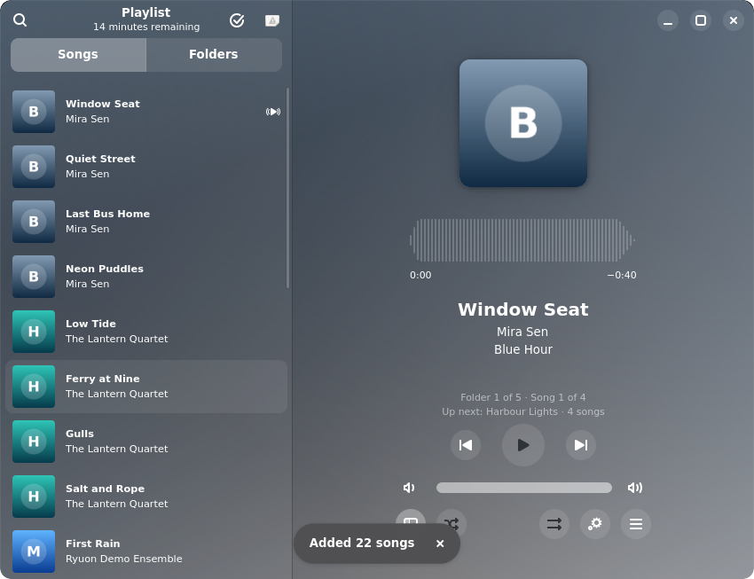

Ryuon
Plays your music library folder by folder.
Install Ryuon
For Linux, with Flatpak. Updates arrive through your software centre.

Install
- Flatpak must be set up. Linux Mint, Fedora and Pop!_OS have it already; for other systems see flathub.org/setup.
- Click Install Ryuon above and open the file with your software centre. Or run:
The first time, Flatpak also downloads the GNOME runtime from Flathub (about 400 MB).flatpak install --user https://k-s-harish-balagi.github.io/ryuon/io.github.k_s_harish_balagi.Ryuon.flatpakref - Open Ryuon from your applications menu. If it was your first Flatpak app, log out and back in once so the menu shows it.
Updates
Installing adds the Ryuon source to Flatpak, so new versions come with your other updates (Update Manager or Software), or with flatpak update. Releases are signed; Flatpak checks the signature before installing.
What it asks for
- Your Music folder, to play it and, only if you choose, to rename messy file names.
- A library somewhere else is reached through the folder you pick in the app; renaming there asks you to allow it once.
- Sound, display and graphics. No network access.
Remove
flatpak uninstall io.github.k_s_harish_balagi.Ryuon